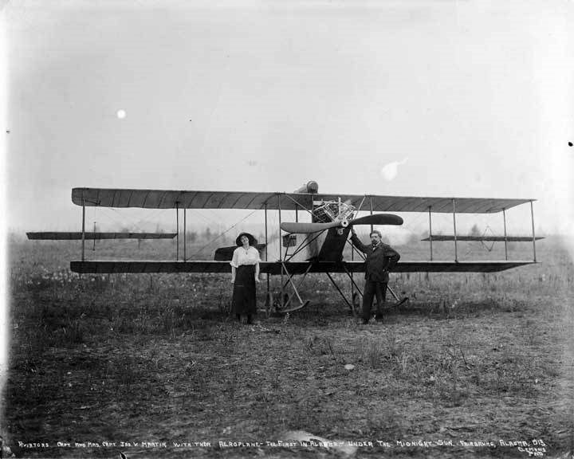

An airplane, or aeroplane, informally plane, is a fixed-wing aircraft that is propelled forward by thrust from a jet engine, propeller, or rocket engine. Airplanes come in a variety of sizes, shapes, and wing configurations.
The Wright brothers inaugurated the aerial age with the world's first successful flights of a powered heavier-than-air flying machine. The Wright Flyer was the product of a sophisticated four-year program of research and development conducted by Wilbur and Orville Wright beginning in 1899. After building and testing three full-sized gliders, the Wrights' first powered airplane flew at Kitty Hawk, North Carolina, on December 17, 1903, making a 12-second flight, traveling 36 m (120 ft), with Orville piloting. The best flight of the day, with Wilbur at the controls, covered 255.6 m (852 ft) in 59 seconds.
